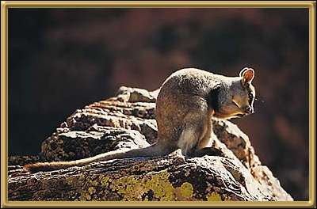

A smaller relative of the kangaroo - these tend to sleep by day in the rocks and forage in the evening. Their habitat is relatively limited, but they are considered to be secure.
Photographer: Unknown